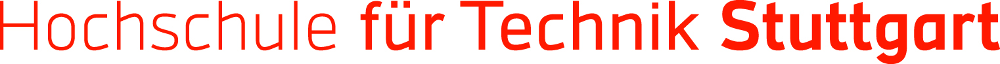

FEEDBACK QUEST
🍃
Lädt...
🌿
VIELEN DANK!
Deine Rückmeldung macht einen Unterschied.
Wir haben deine Antworten erhalten. Ein weiteres Ginkgo-Blatt auf dem Weg zu einer gesunden, resilienten Hochschule!
#resilienteHochschule